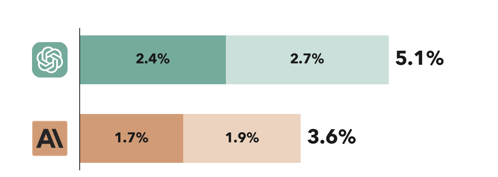

Data Roles at Anthropic vs. OpenAI: Fewer Postings, No Pay Premium
October 29, 2026 · 1 min read
Data roles are a smaller share of Anthropic's new postings than OpenAI's, and they post about the same as Anthropic's other jobs. At OpenAI they post 17% more.
Data roles as a share of new job postings
OpenAI vs. Anthropic, Jan 7 to Oct 28, 2026

Data scientists, data engineers, analytics engineersAnalysts and BizOps
Source: Riso Group scrape of company job boards. 1,771 new Anthropic postings and 2,176 new OpenAI postings.
- Fewer job posts. Specialist data roles are 1.7% of Anthropic's new postings vs. 2.4% at OpenAI. Adding analysts and BizOps, it's 3.6% vs. 5.1%.
- Less competitive pay. Data scientists and engineers are a rare group where Anthropic doesn't post more than OpenAI. Anthropic's posted pay is about 2% lower, vs. 14% higher for other roles company-wide (average midpoint of posted range).
- No premium vs. other departments. Anthropic's data scientists and engineers post basically the same as all other Anthropic jobs (+1.5%), whereas the premium at OpenAI is +17%.
Methodology
New postings are roles first seen after each company's first scrape, counted whether or not still open, from scrapes through Oct 28, 2026. Specialist data roles are data scientist, data engineer and analytics engineer titles; ML engineers are excluded. Analysts and BizOps is a title match on analyst, BI, business operations and strategy and operations roles, excluding finance, systems and policy analysts. Pay is the average midpoint of posted USD ranges, so effectively US pay. These are posted ranges, not offers or pay actually paid, with no adjustment for seniority or location.